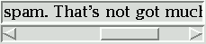

Некоторые виджеты, такие как Listbox и Canvas, могут использоваться как окна, раздвигающиеся в более широкую виртуальную область. Вы можете подключить к ним виджеты с полосой прокрутки, чтобы дать пользователю возможность перемещать их содержимое относительно экрана. Вот снимок экрана виджета входа со связанным с ним виджетом полосы прокрутки:

Полосы прокрутки могут быть горизонтальными, как показано выше, или вертикальными. Виджет, имеющий два прокручиваемых варианта, например, Canvas или Listbox, может иметь как горизонтальную, так и вертикальную полосу прокрутки.
Ползунок (slider), - это прямоугольник с рельефным изображением, который показывает текущую позицию прокрутки.
Две треугольные стрелки (arrowheads) на каждом конце используются для перемещения позиции небольшими шагами. Та, что слева или сверху, называется arrow1, а та, что справа или снизу, называется arrow2.
Желоб (trough) - это утопленная область, видимая за стрелками и ползунком. Желоб делится на две области, называемые trough1 (выше или слева от ползунка) и trough2 (ниже или справа от ползунка).
Размер и положение ползунка относительно длины всего виджета показывают размер и позицию просмотра относительно общего размера. Например, если вертикальная полоса прокрутки связана с Listbox, а ее ползунок занимает от 50 до 75 % высоты полосы прокрутки, это означает, что видимая часть Listbox отображается начиная с отметки половина и заканчивая отметкой три четверти.
В горизонтальной полосе прокрутки клик по кнопке B1 (кнопка мыши 1) на левой стрелке перемещает вид на небольшую величину влево. Клик по кнопке B1 на правой стрелке перемещает изображение на такую же величину вправо. Для вертикальной полосы прокрутки клик по стрелкам, направленным вверх и вниз, перемещает изображение на небольшую величину вверх или вниз. Чтобы узнать, насколько точно эти действия перемещают виджет, обратитесь к обсуждению соответствующего виджета.
Пользователь может перетащить ползунок с помощью B1 или B2 (средняя кнопка мыши), чтобы переместить область просмотра.
Для горизонтальной полосы прокрутки нажатие B1 в желобе слева от ползунка перемещает вид влево на страницу, а нажатие B1 в желобе справа от ползунка перемещает вид на страницу вправо. Для вертикальной полосы прокрутки соответствующие действия перемещают вид на страницу вверх или вниз.
Щелчок на B2 в любом месте желоба перемещает ползунок так, чтобы его левый или верхний конец находился у мыши или как можно ближе к ней.
Нормализованная позиция полосы прокрутки представляет собой число в замкнутом интервале [0.0, 1.0], определяющем положение ползунка. Для вертикальных полос прокрутки позиция 0.0 находится вверху, а 1.0 - внизу; для горизонтальных полос прокрутки позиция 0.0 находится в левом конце, а 1.0 - в правом.
Чтобы создать новый виджет Scrollbar в качестве дочернего элемента корневого окна или фрейма parent:
w = tk.Scrollbar(parent, option, ...)
Конструктор возвращает новый виджет Scrollbar. Опции для полос прокрутки включают:
Таблица 31. Опции виджета Scrollbar
activebackground |
Цвет ползунка и стрелок при наведении на них мыши. См. раздел Раздел 5.3, "Цвета". |
activerelief |
По умолчанию ползунок отображается с рельефным стилем tk.RAISED. Используйте эту опцию, чтобы отобразить ползунок с другим рельефным стилем при наведении мыши на ползунок. |
bg или background |
Цвет ползунка и стрелок, когда мышь не находится над ними. |
bd или borderwidth |
Ширина 3-D границ по всему периметру желоба, а также ширина 3-D эффектов на стрелках и ползунке. По умолчанию границы вокруг желоба отсутствуют, а вокруг указателей стрелок и ползунка - двухпиксельные границы. Возможные значения см. в Раздел 5.1, "Размеры". |
command |
Процедура, которая будет вызываться при каждом перемещении полосы прокрутки. Последовательность вызова описана в Раздел 22.1, "Обратный вызов команды Scrollbar". |
cursor |
Курсор, который появляется, когда мышь находится над полосой прокрутки. См. раздел Раздел 5.8, "Курсоры". |
elementborderwidth |
Ширина границ вокруг стрелок и ползунка. По умолчанию elementborderwidth=-1, что означает использование значения опции borderwidth. |
highlightbackground |
Цвет выделения фокуса, когда полоса прокрутки не имеет фокуса. См. Раздел 53, "Фокус: маршрутизация ввода с клавиатуры". |
highlightcolor |
Цвет подсветки фокуса, когда полоса прокрутки имеет фокус. |
highlightthickness |
Толщина выделения фокуса. По умолчанию 1. Установите значение 0, чтобы подавить отображение подсветки фокуса. |
jump |
Эта опция управляет тем, что происходит, когда пользователь перетаскивает ползунок. Обычно (jump=0) каждое небольшое перетаскивание ползунка вызывает обратный вызов команды. Если вы установите значение 1, обратный вызов не будет вызываться до тех пор, пока пользователь не отпустит кнопку мыши. |
orient |
Установите orient=tk.HORIZONTAL для горизонтальной полосы прокрутки, orient=tk.VERTICAL для вертикальной (ориентация по умолчанию). |
relief |
Управляет стилем рельефа виджета; по умолчанию используется стиль tk.SUNKEN. Эта опция не имеет эффекта в Windows. |
repeatdelay |
Эта опция контролирует, как долго нужно удерживать кнопку 1 в желобе, прежде чем ползунок начнет двигаться в этом направлении повторно. По умолчанию repeatdelay=300, а единицы измерения - миллисекунды. |
repeatinterval |
Эта опция определяет, как часто будет повторяться движение ползунка при удержании кнопки 1 в желобе. По умолчанию repeatinterval=100, а единицы измерения - миллисекунды. |
takefocus |
Обычно фокус посещает виджет полосы прокрутки; смотрите Раздел 53, "Фокус: маршрутизация ввода с клавиатуры". Установите takefocus=0, если вы не хотите такого поведения. Привязка клавиш по умолчанию для полос прокрутки позволяет пользователю использовать клавиши со стрелками ← и → для перемещения горизонтальных полос прокрутки, а также клавиши ↑ и ↓ для перемещения вертикальных полос прокрутки. |
troughcolor |
Цвет желоба. |
width |
Ширина полосы прокрутки (по оси Y, если она горизонтальная, и по оси X, если вертикальная). По умолчанию равна 16. Возможные значения см. в Раздел 5.1, "Размеры". |
Методы для объектов Scrollbar включают:
.activate(element=None)
Если аргумент не указан, этот метод возвращает одну из строк
'arrow1','arrow2','slider'или'', в зависимости от того, где находится мышь. Например, метод возвращает'slider', если мышь находится на ползунке. Пустая строка возвращается, если мышь в данный момент не находится ни на одном из этих трех элементов управления.
Чтобы выделить один из элементов управления (используя стиль рельефа
activereliefи цветactivebackground), вызовите этот метод и передайте строку, идентифицирующую элемент управления, который вы хотите выделить, один из'arrow1','arrow2'или'slider'.
.delta(dx, dy)
Учитывая перемещение мыши на
(dx, dy)в пикселях, этот метод возвращает значениеfloat, которое следует добавить к текущему положению ползунка для достижения такого же перемещения. Значение должно находиться в замкнутом интервале [-1.0, 1.0].
.fraction(x, y)
При задании местоположения пикселя
(x, y)этот метод возвращает соответствующее нормализованное положение ползунка в интервале [0.0, 1.0], которое ближе всего к этому местоположению.
.get()
Возвращает два числа (
a,b), описывающие текущее положение ползунка. Значениеaопределяет положение левого или верхнего края ползунка, для горизонтальной и вертикальной полос прокрутки соответственно; значениеbопределяет положение правого или нижнего края. Каждое значение находится в интервале [0.0, 1.0], где 0.0 - это крайнее левое или верхнее положение, а 1.0 - крайнее правое или нижнее положение. Например, если ползунок растянут от половины пути до трех четвертей пути по желобу, вы можете получить кортеж (0.5,0.75).
.identify(x, y)
Этот метод возвращает строку, указывающую, какие (если таковые имеются) компоненты полосы прокрутки находятся под заданными координатами
(x, y). Возвращаемое значение - одно из'arrow1','trough1','slider','trough2','arrow2', или пустая строка'', если это положение не совпадает ни с одним из компонентов полосы прокрутки.
.set(first, last)
Чтобы подключить скроллбар к другому виджету
w, задайтеxscrollcommandилиyscrollcommandвиджетаwв методе.setскроллбара. Аргументы имеют то же значение, что и значения, возвращаемые методом.get(). Обратите внимание, что перемещение ползунка полосы прокрутки не приводит к перемещению соответствующего виджета.